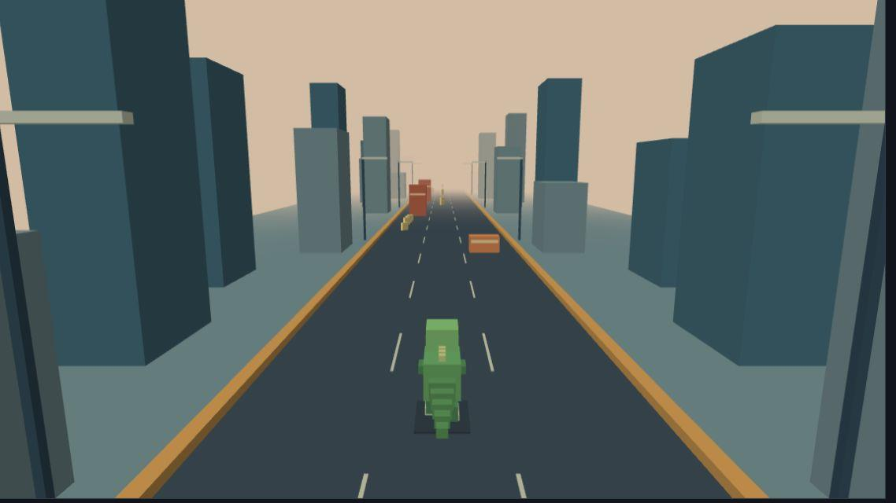
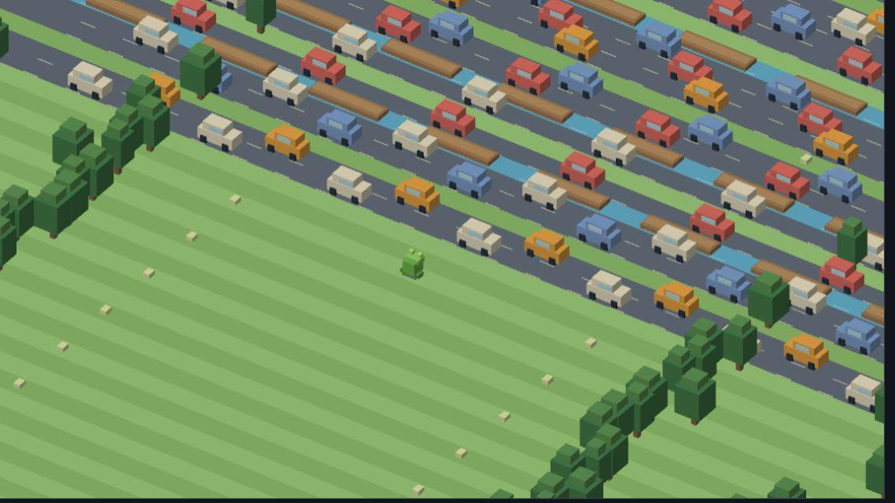
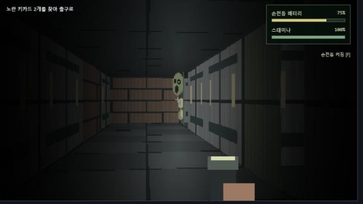
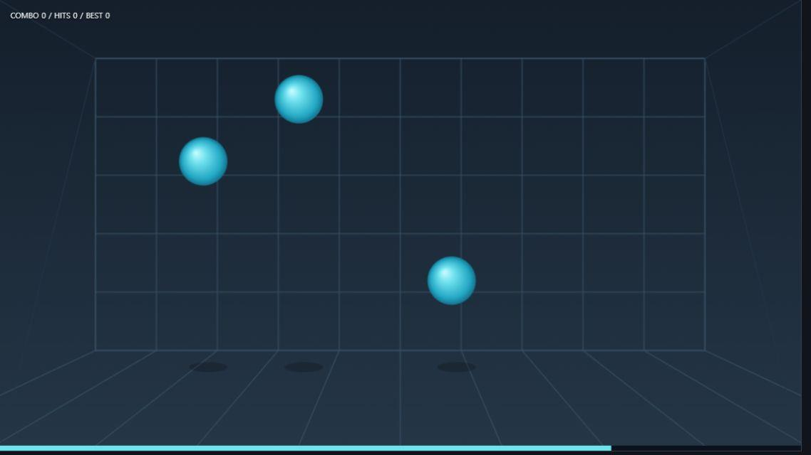
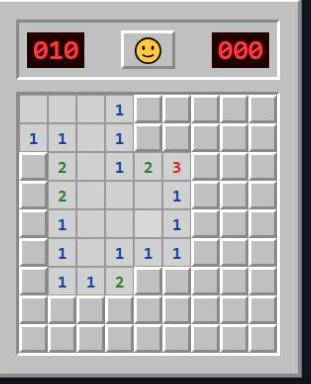
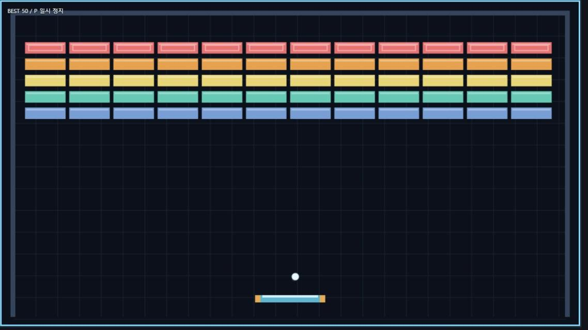

HYUNSOO'S GAME ROOM
설치 없이, 바로 즐기는 미니게임
공룡 점프런부터 공포 미로까지.
원하는 게임을 골라 시작하세요.
전체 게임7개

3D RUNNER공룡 점프런 3D
달리고, 뛰어넘고, 미끄러져 장애물을 피해요.

3D CROSSING길건너 개구리 3D
차를 피하고 통나무를 타며 더 멀리 건너가요.

HORROR미로 탈출 : 숨죽인 지하
모서리의 시선을 찾아 빛을 비춰요. 놓치면 추격이 시작돼요.

AIM TRAINING클릭 타겟 : 훈련장
30초 동안 표적 명중! 기본·정밀·이동 모드에 도전해요.
REACTION TEST반응속도 테스트
네 번의 측정으로 평균과 최고·최저 기록을 확인해요.

PUZZLE지뢰찾기
숫자를 단서로 지뢰를 찾아요. 세 가지 난이도 중 선택!

ARCADE벽돌깨기 : 아케이드
공의 반사 각도를 조절하며 다음 스테이지로 넘어가요.
찾는 게임이 없어요다른 이름으로 검색하거나 장르를 바꿔 보세요.